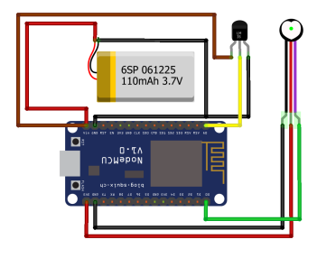

Introduction
Welcome to the Pulse Tracker setup guide. Follow these steps to set up and use your Pulse Tracker.
Requirements
- Arduino board
- Pulse Sensor
- LM35 Temperature Sensor
- SSD1306 OLED Display
- LEDs
- Wires and breadboard
Code
#include
#include "U8glib.h"
U8GLIB_SSD1306_128X64 u8g(U8G_I2C_OPT_DEV_0 | U8G_I2C_OPT_NO_ACK | U8G_I2C_OPT_FAST);
const int PulseWire = 0;
const int LED = LED_BUILTIN;
#define LM35 A0
#define RED 7
#define GREEN 6
int Threshold = 550;
PulseSensorPlayground pulseSensor;
float lm_value;
int tempc;
void draw(void) {
u8g.setFont(u8g_font_unifont);
u8g.drawStr(0, 22, "BPM: ");
u8g.setPrintPos(50, 22);
u8g.print(pulseSensor.getBeatsPerMinute());
u8g.drawStr(0, 40, "Temp");
u8g.setPrintPos(50, 40);
u8g.print(tempc);
u8g.drawStr(80, 40, "C");
}
void setup() {
Serial.begin(9600);
pinMode(RED, OUTPUT);
pinMode(GREEN, OUTPUT);
pulseSensor.analogInput(PulseWire);
pulseSensor.blinkOnPulse(LED);
pulseSensor.setThreshold(Threshold);
if (pulseSensor.begin()) {}
u8g.setColorIndex(1);
pinMode(8, OUTPUT);
}
void loop() {
u8g.firstPage();
do {
draw();
} while (u8g.nextPage());
if (pulseSensor.sawStartOfBeat()) {}
lm_value = analogRead(LM35);
tempc = int((lm_value * 500) / 1023);
if (tempc > 60) {
digitalWrite(RED, HIGH);
digitalWrite(GREEN, LOW);
} else {
digitalWrite(GREEN, HIGH);
digitalWrite(RED, LOW);
}
delay(20);
}
Code Explanation
The code above does the following:
- Includes the necessary libraries for the Pulse Sensor and OLED display.
- Sets up the display, Pulse Sensor, and temperature sensor.
- Defines the pin connections and threshold values.
- In the
drawfunction, it prints the BPM and temperature on the OLED display. - In the
setupfunction, it initializes serial communication, sets up the pins, and starts the Pulse Sensor. - In the
loopfunction, it updates the display with the latest BPM and temperature readings and controls the LEDs based on the temperature.
Installing Libraries
To run this code, you need to install the following libraries:
To install these libraries, follow these steps:
- Open the Arduino IDE.
- Go to Sketch > Include Library > Manage Libraries...
- In the Library Manager, search for the library names above and click Install.
Arduino IDE
If you don't have the Arduino IDE installed, you can download it from the official Arduino website: Download Arduino IDE.
Wiring
Follow this wiring diagram to connect your components:
Usage
Once everything is set up and connected, upload the code to your Arduino and monitor the display for BPM and temperature readings.
GitHub Repository
You can find the complete project and source code on GitHub: PulseTracker GitHub Repository